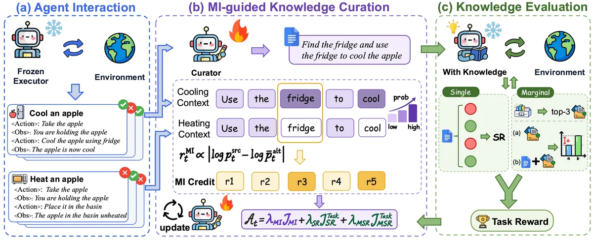

Learning to Accumulate Knowledge with Mutual Information
arXiv preprint, 2026
Knowledge Weaver trains a curator to turn agent trajectories into reusable knowledge with mutual-information-inspired feedback, while keeping the task executor frozen.